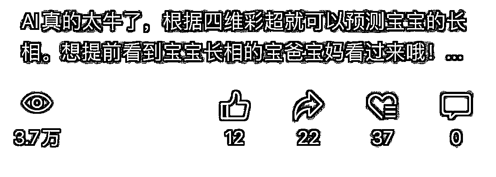
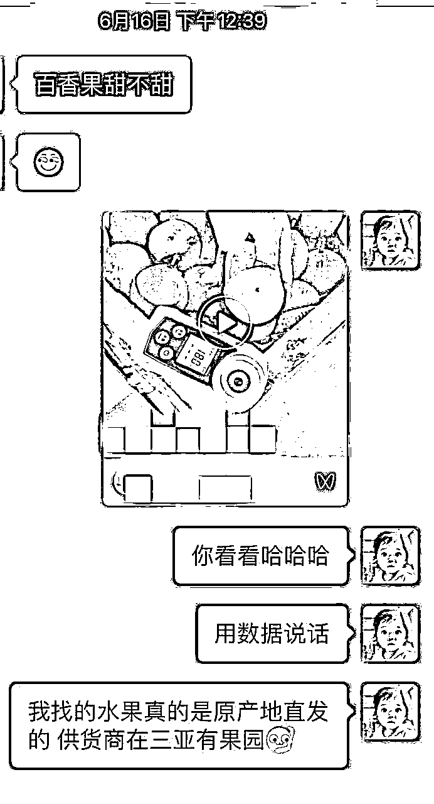
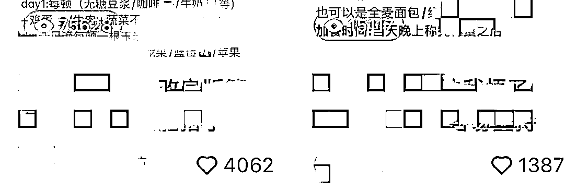

来源：https://tviaco1ik6k.feishu.cn/docx/JRawdxHJnoLJsQx2NCWcGAkNnVf
这部分是自我介绍，加入到抖音四维彩超ai项目赛道的前因后果，以及介绍本文的主要内容。
大家好，我是一棵小苗苗，坐标南京。双211工程女硕士，90后宝妈，主业目前就职于全球三家5G芯片公司之一的通信企业，一枚毫不起眼的芯片前端验证工程师。我也是一名生财新人，今年4.16经方波妮介绍，通过醒谱白战队加入的生财。参加工作四年，结婚生子，生活颇为平静，进入生财开启自媒体之后，好似如鱼得水，重获自由。
在方波妮的小组织里，认识了一批优秀的生财小伙伴，其中包括我们小组织里四维彩超ai绘画的发起人竹子，得以顺利进入到了四维彩超AI绘画赛道。我们小团队大概有20来人都同时在做这个项目，相当于自发性的矩阵打法。竹子的分享中具体描述了画图相关咒语，引流方式及相关话术，后期交付过程及话术，已描述得非常清楚，本文将不过多赘述，此处先附上竹子的复盘贴https://t.zsxq.com/0f0vYur0q。
本文将从以下几个方面进行阐述：
1 抖音三天快速起号和变现方式
2 账号运营与维护
3 起号注意事项及避坑
4 项目发展潜力和二次转化
5 总结
这部分主要包括了前一周流量爆发期的尝试，起号的主要问题和相应操作，再到三天暴力起号，最后疯狂怼量获取流量。
5.8号竹子发布了第一条关于四维彩超ai绘画的作品，直接爆了，然后我们也开始跟着下场发视频。
5.9我首选的平台是视频号，新号起步，发的第一个四维彩超ai绘画作品，浏览量9w+，单天单号引流20+；
5.10视频号发布第二个作品，浏览量3.7w；

5.11视频号发布第三个作品，流量量1.3w；
5.12不得不说视频号引流真的太丝滑了，但是不知道是引流方式没太注意还是因为视频号不喜欢四维彩超相关内容，账号突然被限流了，后面换号流量也再也没有起来过，其他小朋友反馈也是流量一般，就此视频号GG。
同时开始重心转移到抖音，发布第一个作品，浏览量3.9w，一直到5.15，每条视频浏览量都过万，但是下午就被提醒账号违规，封号7天，一个抖音号又GG（避坑见后文）；
在此期间我操作过的抖音号有5-6个，都没有进行特别的养号行为，上来就发布作品。换句话说，我认为发布作品就是最好的养号方式，别怼，怼就是你对😂。
有变现途径一定要开通企业号，企业号可以提供自动回复，线上预约，卡片信息等一系列的服务，能够对感兴趣的人进行快速回应，加速成交。开通企业号并获得相应功能需要两个条件，一个是营业执照，另一个是粉丝数1k以上。关于办理营业执照，线下自己办理请参考竹子的精华帖。我是拿家人身份直接找人代办的，花费时间2天，花了300块钱（适合在职党，一般单位不允许办理营业执照）。
涨粉有两种方式，一般来说还是靠发作品，投抖+，但这种方式对我来说有点慢；第二种方式就是买粉丝。在当下需要快速承接流量，并且在职党亟需企业号提供的自动回复功能的情况下，我果断选了后者。买粉花费150，加上营业执照，开通抖音企业号，性价比超高。
买粉会不会影响账号权重，据我自身经验而言，大大滴不会。截止目前，除了没有特别明显的感觉到批量掉粉的问题，而且还在稳步涨粉中，目前粉丝数2300+，几乎都是自然流量。这里说一点，买来的粉丝大多都是50岁以上的人群，神奇的和我们作品主题契合起来了，每天都有很多粉丝来替儿媳妇和女儿接好孕。
当时也是方波妮给我们推荐的增加抖音搜索曝光的办法，具体大家可以结合抖音seo相关手册进行学习。再一次感叹生财如此之强大，凡是你能想到的，需要的，生财都有。https://search01.shengcaiyoushu.com/docx/XEb4d9F4WogubixyOM9cMVeen0d
那我能怎么轻易被打败吗？如何月入过万，下面才是重点。在掌握2.2节的全部方法的情况下，没有丝毫犹豫，一切从头开始。以下是我已错过前一周流量爆炸黄金时期，三日起号的具体操作。
5.17启动新号，以下三件事情同时进行：纯新号重新发布第一个作品，找渠道买千粉，找人代办营业执照。
5.18营业执照是以我爸爸身份办的，他手机操作不太流畅，耽误了一天，同时账号正常发布作品。
5.19营业执照已到位，粉丝数已满1k，开通了抖音蓝v认证，继续发布作品。
5.20单日入账420，5.21单日入账588，我的账号就此转起来了。
每天保持发布作品2-3条。截止目前，账号累计发布视频个数超过100，累计视频播放量超百万，点赞5w+。平均下来，单视频浏览量均过w，点赞均超500，甚至荣登某拆解账号文章首图（bushi），这作为一个自媒体新人来说，自我表示满意。接下来就带领大家一起来拆解我的号，我的号我自己拆！
错过流量爆发期，如何拥有一席之地？那就是怼量。同时期起步的小伙伴里，我的总浏览量不是最高的，但视频个数和点赞量应该是排在前面的。一个多月几乎保持着日均2-3个视频，目前视频合集浏览量已超百万，点赞量5w+，平均下来，单视频浏览量均破万，点赞量500+。下一章就主要阐述下我是如何对账号进行运营和维护的。
目前，抖音上四维彩超ai画图这块蛋糕并不大，但也有不少人在盯着。在做的过程中，除了竹子提到的相关变现方式外，来寻找合作的有两类方式觉得值得一说的，其中一类是医疗行业相关的人员，他们负责获客，我们负责画图。其中一个甚至让我整理了一个简单的文档，方便他去医院谈合作；
另一类是加盟的方式，比如我们收加盟费1.8w，每天给加盟者固定提供200单，客单价15。
这部分主要介绍了作为一名在职党，账号运营的相应操作，和遇到流量瓶颈时进行突破的实际操作。
对于一名在职党来说，要保证主业不受过多影响，对于账号的运营和维护，主打的就是一个提高效率，这也是我一开始选择买粉和办理营业执照的主要原因。
企业号升级到黄金，开通自动回复，消息卡片，高级预约等功能，此处感谢波妮身先士卒，为我们率先打了样，我们只管冲。此外，投抖+可以快速升级，一般开通完企业号第二天就能达成，具体话术相关，直接参照竹子的帖子即可。
企业号的好处一则能快速让目标人群明白我们提供的服务是什么，二则能显示出我们的专业性，提高目标客户对我们的信任度。
作品方面也是个慢慢摸索的过程，关于四维彩超作图方法，本文就不细说了，生财里都有。唯一的剪辑工具就是剪映，前期作品主要专注于视频，抄爆款，形式大多一致，四维彩超，ai预测照片和出生照对比，选一个相符的背景音乐，然后发布。那会流量真的不错，虽然视频看起来很粗糙，可能很多人尤其是未婚未育组，甚至觉得不适，完全都不会多看一眼。但是孕妈看到立马会被吸引住，如图所示是5.20至今，一个半月左右私信咨询过的总人数。
重要的地方来了，慢慢抖音上发四维彩超ai绘画的逐渐多了起来，这时候浏览量很难突破1w，大多在1-5k。6.1正好回了趟老家，每天有时间会多刷一下抖音，翻找对标素材。发现有的账号数据很好就模仿，期间尝试了一下图文方式，然后过了一两天再观察自己的账号时，突然发现了新大陆！从此之后，我就开始猛怼图文。下图中间那个一枝独秀是视频，周围全是图文形式，发布图文作品的数据几乎是视频数据的3-5倍，可以说四维彩超ai就要发图文。
图文方式具体操作一开始我也不会，剪映一般只能做视频，怎么转成照片呢？一通折腾之后我直接化繁为极简，导出到相册之后，直接截图，然后裁剪掉多余部分，简单粗暴但实用。
简单而又具体的跟大家说下我每天发作品的过程，剪映有保存草稿的功能，每天早上刚睁眼，先选三张照片直接替换上次的照片，文案保留，导出，然后就是截图截图截图，裁剪裁剪裁剪，然后打开抖音复制上一次的文案，添加照片，添加上一次的背景音乐，保存到草稿，早中晚各发布一条，就完事了，作品投入时间不到三分钟。但是几乎每条视频浏览量都过万，点赞500+。
这里说下，可能很多人都知道抖音目前在给图文推流，这本身没什么，但当我们都身处其中的时候，往往会忽视一些原本我们知道的点，所以我们需要时常跳出来，看看其他人都在做什么，以第三者的角度来对我们的账号进行审视和评估，可能也会发现新大陆。
说到这，再跟大家分享一下我账号流量的一个转折点，六月底的时候，主业和营养师考试让我时间有点分身乏术。账号仍然保持每天一到两天更新频率，但是前期一直怼这个文案，流量感觉被榨干了，浏览量点赞量均腰斩。
这时候又刷到一个账号，天天发布同一个作品，但次次流量都很好。然后我在连续怼了一个月之后第一次换了文案，单篇流量迅速到了2w，点赞到2k。然后直到现在，我还在继续用，每天账号流量都有2-3w，这次也一样，榨干为止。
如果说第一次的图文流量爆点在于接好孕，发到流量腰斩后，那第二次就是接男宝，文案到背景音乐通篇都是接男宝，别不相信人性，也别看方式简单粗暴，甚至有点低俗，在抖音平台合理规则内要获取流量就要看大众的喜好。
做项目中过程中，谁还不玩废几个号呢。视频号引流太粗暴玩废1个号，抖音引流方式和作品发布问题玩废2个号，导致错过了前一周的流量爆发期。然后总结经验重新开启三天暴力起号，从第四天开始稳定日均变现500+。这节主要说下我1个视频号和2个抖音号是如何玩废的。
我的第一个四维彩超ai绘画的视频是在视频号发布的，而且是刚注册的新号，流量瞬间就爆了。发了两到三天，条条流量都爆，导致触发了平台审核，直接限流了。
由于前期经验不足，甚至找不到视频号申诉入口，也不得不说视频号申诉这方面做的属实不够人性化，最后研究发现只能靠发邮件进行申诉。视频号引流实在太丝滑，还是挣扎了一下，试图申诉。我总共发过两次申诉，响应时间平均一周，不得不说，这响应速度，黄花菜都凉了。但是后续发现视频号对四维彩超整体给的流量就不高，而且图文方式不太可行，也就果断弃号了。
上述图片有两个信息点跟大家说明一下，两条腿走路，同步进行：
1.视频号邮件响应时间约一周，所以账号限流后，不要等，及时发邮件进行申诉，缩短回应等待时间；
2.同时，持续发布10条原创作品，据说一天可以发布5条，也就是两天就能达到要求。
不管什么平台，一定要单机单号，否则流量影响巨大，由于都是矩阵打法，很大几率会导致某一个号视频审核不通过。我偏偏不撞南墙不回头，前期手机也不够，就直接切换账号，直接废了一个号，要么作品不符合原创性，不适合推广，要么就是直接限流。
这里提醒大家一个方法，抖音发布作品后可以点上热门，看看是否提示不符合加热规则，尤其是发布一段时间后小眼睛极低的情况也一定要看看。如果有提示，赶紧修改文案，或者直接修改为仅自己可见，千万千万别和平台对着干。如果出现如下可正常加热界面，证明视频问题不大。
抖音有时候会出现误判，导致出现违规行为。其实后来才知道这种违规申诉大概率都能撤销。5.15申诉，到5.17撤销违规，抖音从申诉到撤销违规时间两个工作日左右，而且申诉方式很友好，直接有相关入口，这点给抖音点一万个赞。
但是普通抖音号有了违规之后，流量变得很差，重新尝试发布了几个普通的视频，小眼睛甚至不过百，只能果断弃号了。
如果号废了是继续养号还是果断弃号重新注册？如果这个号是个普通号，无足轻重，建议直接注销重新注册，养号重新获流时间成本高，效果也不好，注册新号甚至有流量扶持。但是如果是企业号，还是规规矩矩，该申诉申诉，该卑微卑微，因为抖音对企业号的容忍度更高，不会彻底限流。
这部分主要介绍现在入场是不是合适，小号四维彩超ai绘画的起号能力，以及引流的精准宝妈后续二次变现的尝试与思考。
很多人想，现在入场是不是已经晚了。这个要分情况，要看你的需求是什么，如果你想像我们一样，提高客单价（49.9）付费画图，目前转化确实低了；但是如果你接受低客单价（19.9/29.9）画图，目前仍然有市场，每天来私信的人还是有几十个（前期高峰时后可能100-200个）；再如果你为了引流免费做图，日均引流30+不是难事。我收的两个徒弟是做返现app的，她们想要学会之后的用来引流，前两天下载和学习工具，第三天就有人来咨询并成功引流了。后期如果付费不香了，我们也考虑转变思路，免费引流后续再变现。
我另外尝试了2-3个小号，每次只更换图片，但是个个流量都很好，几乎每篇流量都破万。但由于手机有限，精力有限，也就没再更新了，放上两个小号的截图，我想说四维彩超起号yyds！
最后想跟大家分享下精准引流的将近400个宝妈的后续转化尝试。除了竹子复盘里提到的变现方式外，我也尝试了一些其他的方法，并都得到了反馈，成功变现。
先拉群，然后通过app自带的机器人分享优惠链接，成交后就会有分佣。拉群的时候最多前30人不用确认即可直接拉进群，但是这种方式有点粗暴，毕竟这些都是有过付费的优质客户，可能会造成不好的体验感。所以，我也没再继续拉人，但是此次尝试也有收益，开了十天的免费机器人，返现总收益135。此处可看出，如果想免费引流做返现app是能行得通的，搞笑又真实哈哈哈。
圈友的高端水果，相关小程序可直接下单。圈友家的水果质量，售后保障都很好，所以我开始试水，发了第一条相关朋友圈就顺利成交一单，单价88，收益10元。后面由于要备考高级营养师，所以也就暂停了，但是此次尝试也证明孕宝妈变现机会还是很高的。朋友圈运营对我来说还是个大学问，需要再好好学习。

这个也是我打算长期经营的一个方向。当时也是说干就干，5.12号报名，7.2号已考完，等成绩中。孕妈减肥，儿童营养，希望能通过这一次引流发掘出更多的变现机会。
现在回想起来，5.12号这天我真的干了不少事情，那天视频号高流量时刻被封；转战抖音，办执照，买粉；报考高级营养师。这一天距离我进生财，甚至一个月都还不到，我从之前的敢想就变成了敢做。当然，促使我报考高级营养师还有一个重要的原因，是因为我的小红书减肥账号也爆了，5.8号开始发布第一条小红书笔记，一周涨粉200+，点赞量过万，爆了三个作品，其中最高一篇浏览量7w+，点赞4000+。但是因为工作和四维彩超ai的快速变现导致目前停更中。但是我认为引流的这群宝妈和小红书减肥营养师ip丝毫不冲突，所以这将是我接下来重点的关注方向，简单贴下我小红书的账号情况。

好了，这次就先说到这里，希望下一次的分享就是小红书营养师ip相关的变现及复盘，一起加油！目前引流近400精准孕妈宝妈粉的变现还在挖掘中，欢迎圈友们提出宝贵建议哦～